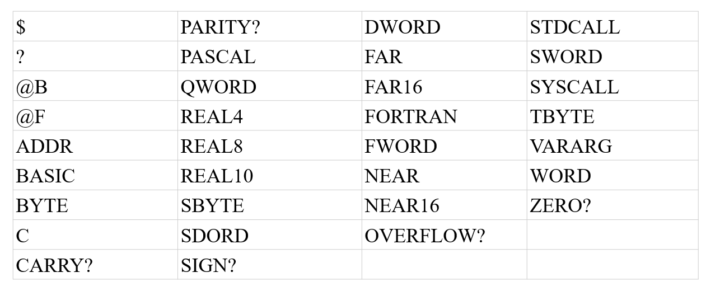
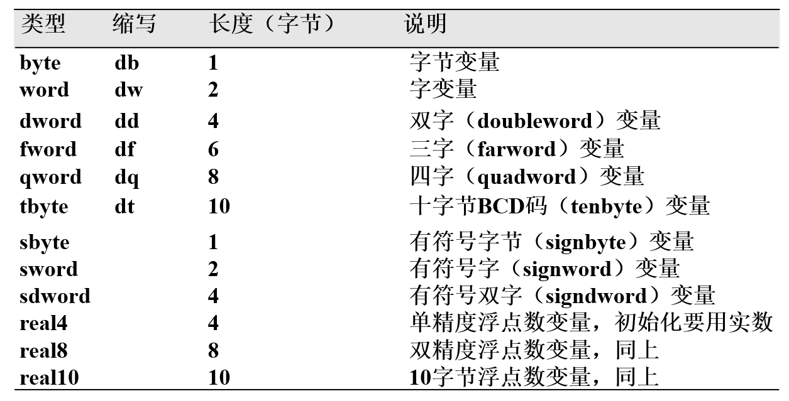
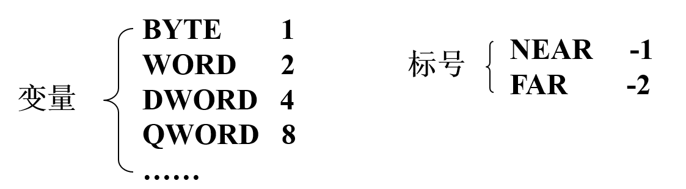
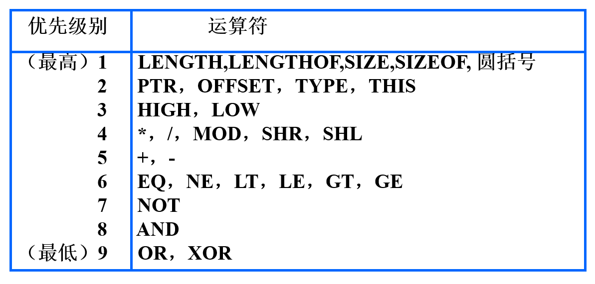

X86汇编语法
本文最后更新于：January 1, 2023 pm
X86汇编语法
目前支持Intel x86系列微机常用的汇编程序有ASM、MASM、TASM、OPTASM等。本文以MASM为主要内容。
X86汇编语言语句可分为两种语句:
- 指令语句: 每一条指令语句在汇编时都要产生一个可供CPU执行的机器目标代码，它又叫可执行语句。
- 伪指令语句: 伪指令语句又叫命令语句，是指示性语句。伪指令本身不产生自己的机器目标代码。它指示汇编程序对其后面的指令语句和伪指令语句如何处理(类似C语言中的宏)。
X86指令语句语法
指令语句的一般格式:
1 | |
一条指令语句最多可以包含4个字段:
- label(标号): 表明指令地址，一般用于程序跳转，由汇编器计算位移量
- op(指令助记符): 即指令命令本身
- oprd1···oprdn(操作数): 根据指令对操作数的要求，可选项
- ;(注释开始标志):
;后的行内字符被汇编器忽略
X86具体指令见x86指令系统
X86伪指令语句语法
伪指令语句的一般格式:
1 | |
一条伪指令语句最多可以包含4个字段:
- label(标号): 表明指令地址，一般用于程序跳转，由汇编器计算位移量
- pseudo op(伪指令符): 伪指令命令
- oprd1···oprdn(操作数): 根据伪指令对操作数的要求，可选项
- ;(注释开始标志):
;后的行内字符被汇编器忽略
X86数据类型
X86汇编常用的数据形式有: 常数、变量和标号，其中变量和标号均需要使用标识符进行命名。
一个数据由数值和属性(比如是字节数据还是字数据)两部分构成。
标识符
标识符命名规则:
- 字符的个数为1~240个
- 可以用字母、数字、下划线及符号@、$和?
- 第一个字符不能是数字
- 不能使用系统专用的保留字(关键字key words)

常数
常数: 经过汇编后其值已完全确定，并且在程序运行过程中，其值不会发生变化。
常数的表达方式:
- 直接通过进制数表示: 如
12(十进制)、0101B(二进制)、A8H(十六进制)等 - 实数:
2.134E +10(±整数部分.小数部分E±指数部分) - 字符串:
'ABC'=>41H 42H 43H(用单引号或双引号括起来的一个或多个字符，其值为这些字符的ASCII码值)
常数的使用场景:
- 做指令的源操作数，是立即寻址
- 在指令语句的直接寻址、寄存器相对寻址或基址变址寻址方式中作位移量
- 在数据定义伪指令中作为初始化值
变量
变量: 用来表示存放数据的存储单元，这些数据在程序运行期间可以被改变。
程序中以变量名的形式来访问变量。变量名就是存放数据的存储单元地址。
定义变量: 给变量在内存中分配一定的存储单元，也就是给这个存储单元赋与一个符号名——变量名，同时一般还要给分配的存储单元预置初值。
如C语言相同，变量被分为全局变量和局部变量。
- 全局变量: 全局变量的作用域是整个程序，全局变量定义在数据段内
- 局部变量: 通过伪指令使得变量的作用域限制在子过程中
变量的定义
全局变量:
必须定义在数据段，定义格式:
1 | |
全局变量的属性:
- 段属性: 表明在哪个段中，
.data和.data?表明在数据段 - 偏移量属性: 表明变量所在位置与段起始点之间的字节数
- 类型属性: 表明变量占用存储单元的字节数

段属性和偏移量属性就构造了变量的逻辑地址。
特殊的初始化情况
1 | |
当使用字符串对dw、dd、df、dq类型变量赋初值时，高位字符放在高地址单元，地位字符放在低地址单元，不足时高位补零！并且对df、dq变量赋初值时，字符串不能超过4位(因为寄存器最大为32位)
dup初始化
dup称为重复数据操作符，一般用于变量批量初始化。
格式:
1 | |
- variable: 变量名
- type: 变量类型
- count: 重复的次数
- value: 重复的内容，为
?时等价于0
通过dup可以将内存连续的空间赋值为一个特殊的值，通过dup嵌套可以为连续空间赋重复序列。
dup嵌套
1 | |
局部变量:
通过local伪指令定义局部变量。
格式:
1 | |
local语句要紧跟在过程定义porc语句之后- 默认的类型是dword，因此定义dword类型的局部变量，则类型可以省略
- 当定义数组的时候，元素个数用
[]括号括起来 - 局部变量不能和已定义的全局变量同名
- 局部变量的作用域是当前的子程序，所以在不同的子程序中可以有同名的局部变量
- 局部变量的初值是随机的，是其他子程序执行后在堆栈里留下的垃圾，所以使用时一定要对局部变量赋值
变量的使用
变量一般有两种方式使用:
- 给dd和dq类型变量做初始化值，但不能给其他类型变量做初始化值(变量本质为32位偏移地址，dq为偏移地址和段地址)
1 | |
- 作为地址给指令直接使用:
- 直接使用变量名: 做直接寻址的地址使用
1
2data db 2; 定义数据变量
add al, data; 将data内的值与al内容相加送到al中- 寄存器相对寻址或基址变址相对寻址时，偏移地址作为基址
1
2
3
4data1 db 10H DUP(?); 定义数据变量
data2 dw 10H DUP(1); 定义数据变量
mov data1[esi], al; 将AL的内容送入从data1开始再偏移(ESI)的存储单元中
add dx, data2[ebx][edi]; 将从data2开始再偏移(EBX)+(EDI)的字存储单元的内容与DX的内容相加，结果送回DX中
标号
标号加在一条指令的前面，它就是该指令在内存的存放地址的符号表示，也就是指令地址的别名。
标号主要用在程序中需要改变程序的执行顺序时，用来标记转移的目的地。
局部标号格式:
1 | |
全局标号格式:
1 | |
标号属性:
- 段属性: 表明在哪个段中，
.code表明在代码段 - 偏移量属性: 表明变量所在位置与段起始点之间的字节数
- 距离属性: 表明标号可以被段内还是段间的指令调用
- near: 只能作段内转移，即只能是与该标号所指指令同在一个逻辑段的其它指令才能使用它
- far: 可以被非本段的转移和调用指令使用
距离属性指定格式:
1 | |
label伪指令还可用来定义变量的属性，即改变一个变量的属性，如把字变量的高低字节作为字节变量来处理。
1 | |
data_byte可以被用来存取一个字节数据而data_word不能
常用伪指令格式与表达式
comment
格式:
1 | |
功能: 实现块注释，块注释内部不能出现自定义的符号
dup
在dup初始化中有介绍
label
在标号中有所应用
equ
格式:
1 | |
功能: 用符号名来表示equ右边的表达式。后面的程序中一旦出现该符号名，汇编程序将把它替换成该表达式。(类似C语言中的define，因此符号在内存中没有保存，而是直接作为立即数出现)
例:
1 | |
符号名不能重复！
=伪指令
格式:
1 | |
=伪指令与equ伪指令效果相同，区别在于equ可以给指令取别名而=不可以，equ不可以重复赋值而=可以
运算符
表达式是指令或伪指令语句操作数的常见形式。它由常数、变量、标号等通过操作运算符连接而成。
任何表达式的值在程序被汇编的过程中进行计算确定，而不是到程序运行时才计算。
1 | |
offset
格式:
1 | |
功能:
取变量或标号在段内的偏移地址
type
格式:
data dw 1; 定义字类型数据
label1: mov al type data; al = 2
mov bl, type label1; bl = -1
功能:
取变量或标号的类型属性，并用数字形式表示。对变量来说就是取它的字节长度。

length/lengthof/size/sizeof
格式:
1 | |
功能:
- length: 取DUP说明的重复次数，并且只取最外层DUP的重复次数。如果第一个初始值不是DUP说明，则LENGTH运算符返回值总是1。
- lengthof: 取变量定义行中的初始值个数
- size: size = length type
- sizeof: sizeof = lengthof type
ptr
格式:
1 | |
功能:
用来对变量、标号或存储器操作数的类型属性进行修改或指定
1 | |
high/low
格式:
1 | |
功能:
取常数的最低8位和其后的8位。
注意: HIGH/LOW运算符不能用来分离一个变量、寄存器或存储器单元的内容。
如:
1 | |
运算符的优先级

proc/endp
格式:
1 | |
- process_name: 是子程序的名称，用CALL指令或INVOKE伪指令来调用该过程
- 距离: 可以是NEAR、FAR、NEAR16、NEAR32、FAR16或FAR32
- 语言类型: 表示参数的进栈顺序和堆栈恢复的方式，可以是StdCall，C，SysCall，BASIC、FORTRAN和PASCAL，如果忽略，则使用程序头部 .model定义的值
- 可视区域: 可以是private、public和export，缺省时为public
- private:表示过程只对本模块可见
- public: 表示对所有的模块可见
- export: 表示是导出的函数，当编写DLL的时候要将某个函数导出的时候可以这样使用
- USES寄存器列表: 用于保存执行环境(自动push和pop保护现场)，寄存器间用空格分隔
- 参数列表: 用来定义过程使用的参数名和类型(参数1:类型,参数2:类型)
- 若指定了参数，则过程要用invoke伪指令调用，否则应在CALL指令调用之前将参数按照规定的顺序压栈
- 若过程未指定参数则可用call指令，也可以用invoke调用
- 参数名不能与全局变量和过程中的局部变量重名
功能:
PROC和ENDP伪指令定义了过程开始和结束的位置， PROC后面跟的参数是过程的属性和输入参数。
invoke
格式:
1 | |
功能:
调用三方库或系统API
$伪指令与org
格式:
1 | |
功能:
$: 表示"位置计数器"的当前值，也被称为当前位置计数器，即当前偏离段基址距离(32位)
org: 将数值表达式的值赋给当前位置计数器$，ORG语句为其后的变量或指令设置起始偏移量，表达式的值必须为正值
若运行环境为flat模式，则该伪指令并不能把一个具体的偏移值赋值赋给位置计算器，系统会自动为每个段指定一个起始偏移地址，数值表达式的值为相对该起始偏移地址。
X86源程序框架
1 | |
上述代码即Win32汇编语言源程序的一般框架，如C语言必须以main为入口函数般的模板。书写Win32汇编可按照该源程序框架进行改进。
X86三方库Irvine进行输入输出操作
为实现各种IO设备的输入输出，Win32提供了非常丰富的API，它是Win32 Platform SDK中的一部分，覆盖了所有的输入输出功能，但使用上稍显繁琐。
CSUDH的Irvine教授在Win32 SDK的基础上，整理和编写了一个API库——Irvine32.LIB。
API详情见其官网API手册
本博客所有文章除特别声明外，均采用 CC BY-SA 4.0 协议 ，转载请注明出处！